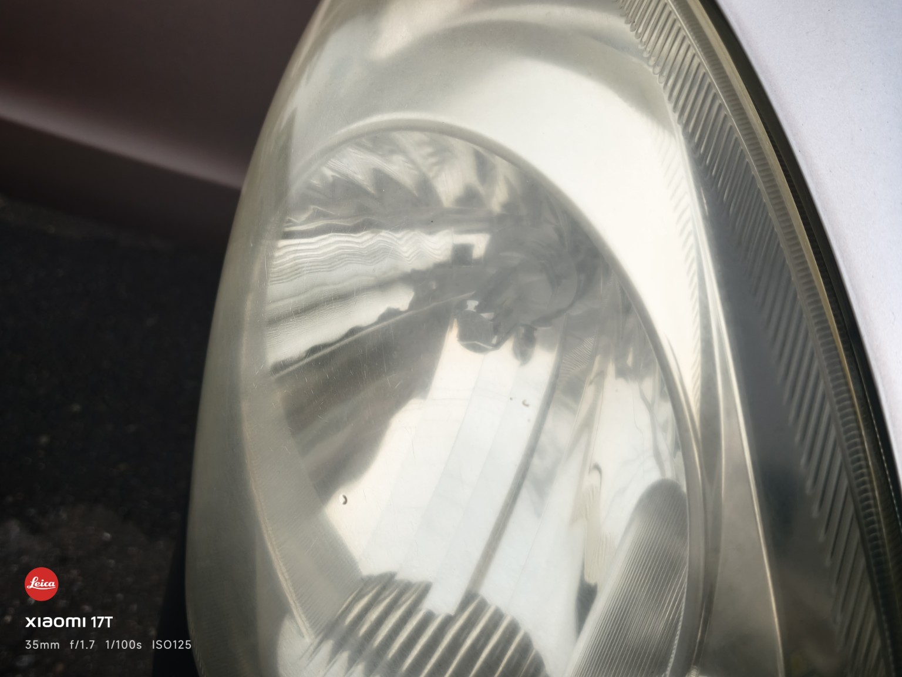
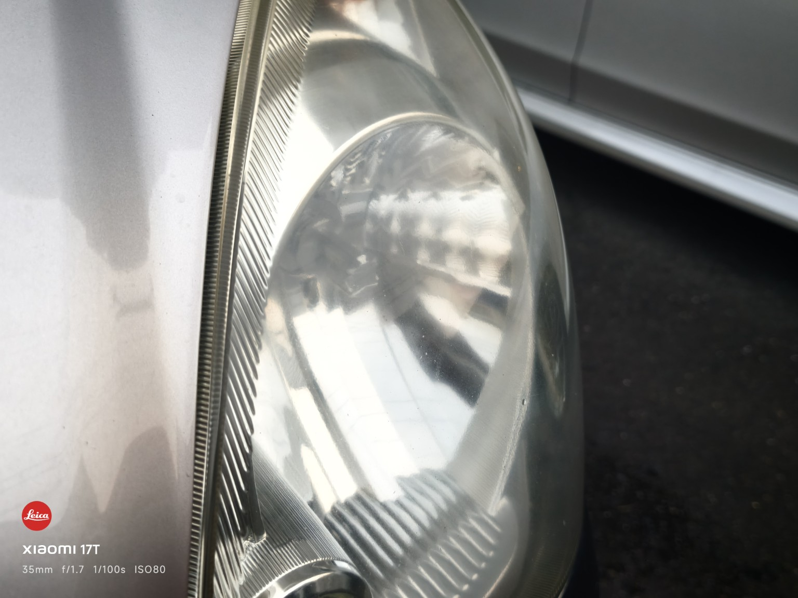

ヘッドライト・窓・ホイール。
気になる所だけ綺麗に。
ヘッドライト磨き、窓ガラスのウロコ取り、メッキクリーニング、窓ガラス撥水、ホイールコーティング、鉄粉除去、無塗装樹脂などを単品で施工できます。
料金はKeePer LABOの公表価格を参考に、SHINOMIYA WORKS独自価格として約60％相当を目安に設定しています。原則100円単位に丸めています。
ウインドウ
| シリコンウインドウKeePer フロント SS〜M | ¥4,200 |
|---|---|
| シリコンウインドウKeePer フロント L〜XL | ¥5,800 |
| シリコンウインドウKeePer 全面 SS〜M | ¥9,500 |
| シリコンウインドウKeePer 全面 L・LL | ¥10,600 |
| シリコンウインドウKeePer 全面 XL | ¥11,600 |
ヘッドライト・レンズ
| レンズコーティング 軽自動車 | ¥4,400 |
|---|---|
| レンズコーティング 普通車 | ¥5,500 |
| ヘッドライト クリーン＆プロテクト 左右 | ¥5,800 |
| レンズ＋ヘッドライト クリーン＆プロテクト 軽自動車 | ¥6,500 |
| レンズ＋ヘッドライト クリーン＆プロテクト 普通車 | ¥7,600 |
ホイール
| ホイールコーティング シングル（表4本）〜15インチ | ¥7,000 |
|---|---|
| ホイールコーティング シングル（表4本）16〜19インチ | ¥7,800 |
| ホイールコーティング シングル（表4本）20インチ〜 | ¥9,200 |
| ホイールコーティング ダブル（表4本）〜15インチ | ¥10,300 |
| ホイールコーティング ダブル（表4本）16〜19インチ | ¥11,800 |
| ホイールコーティング ダブル（表4本）20インチ〜 | ¥13,900 |
| ホイールクリーニング | ¥1,400 |
無塗装樹脂・鉄粉除去
| 無塗装樹脂 フェンダー単品 | ¥4,100 |
|---|---|
| 全ての無塗装樹脂 | ¥6,000 |
| 樹脂面積の大きい車（〜） | ¥11,300〜 |
| 鉄粉取り（軽度）SS | ¥1,800 |
| 鉄粉取り（軽度）S | ¥2,000 |
| 鉄粉取り（軽度）M | ¥2,200 |
| 鉄粉取り（軽度）L | ¥2,400 |
| 鉄粉取り（軽度）LL | ¥2,800 |
| 鉄粉取り（軽度）XL | ¥3,100 |
エンジンルーム
| エンジンルーム クリーン＆プロテクト | ¥3,600 |
|---|
窓ガラスのウロコ取り
通常の洗車では落ちにくい窓ガラスのウロコ状の固着汚れを専用の道具・ケミカルで除去します。
| サイドガラス 1枚 | ¥4,200 |
|---|---|
| フロント・リア・ルーフガラス 1枚 | ¥8,400 |
KeePer LABO公表価格（税込7,040円／13,970円）の約60％を100円単位に丸めた当店独自価格。汚れの固着やガラスの傷・劣化によっては除去できない場合があります。
メッキクリーニング
メッキパーツのくすみ・汚れをクリーニングし、見た目を整えます。
| メッキクリーニング | ¥4,100〜 |
|---|
KeePer LABO公表価格（税込6,820円）の約60％を100円単位に丸めた当店独自価格。対象部位・材質・腐食の程度により事前確認が必要です。メッキ剥がれや深い腐食は復元できません。
ヘッドライト磨き施工例
名古屋市・ダイハツ ミラ。表面の黄ばみ・くすみを磨いて透明感を整えた施工例です。

施工前
ヘッドライト表面に黄ばみ・くすみが見られる状態。

施工後
表面を磨き、透明感と見た目を整えています。
料金について
上記はKeePer LABO公表価格を参考にしたSHINOMIYA WORKS独自の目安価格です。原則として約60％相当を目安に100円単位へ丸めています。KeePer公式の割引・キャンペーン価格ではありません。車両状態、施工範囲、特殊な汚れ、追加作業などにより料金が変わる場合があります。
よくあるご質問
アラカルトだけでも頼めますか？
はい。窓、ホイール、鉄粉除去、ヘッドライト、ウロコ取り、メッキクリーニングなど単品でもご相談いただけます。
コーティングと一緒に頼めますか？
可能です。ボディコーティングやボディ磨きと合わせて必要なメニューだけ追加できます。
価格はKeePer LABOと同じですか？
いいえ。KeePer LABO公表価格を参考にしたSHINOMIYA WORKS独自価格です。